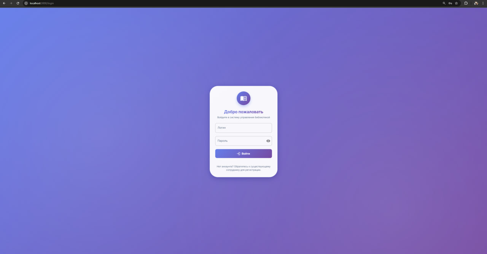
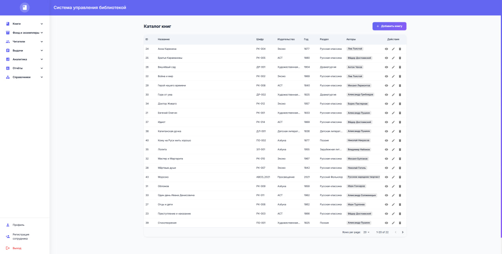
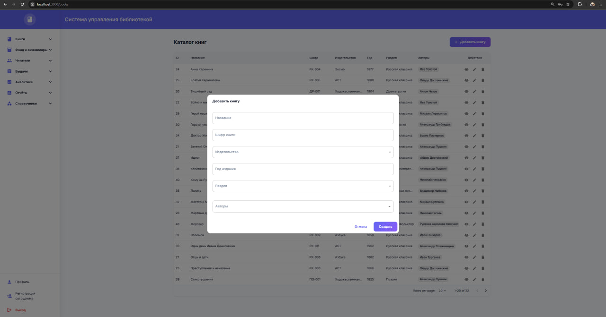
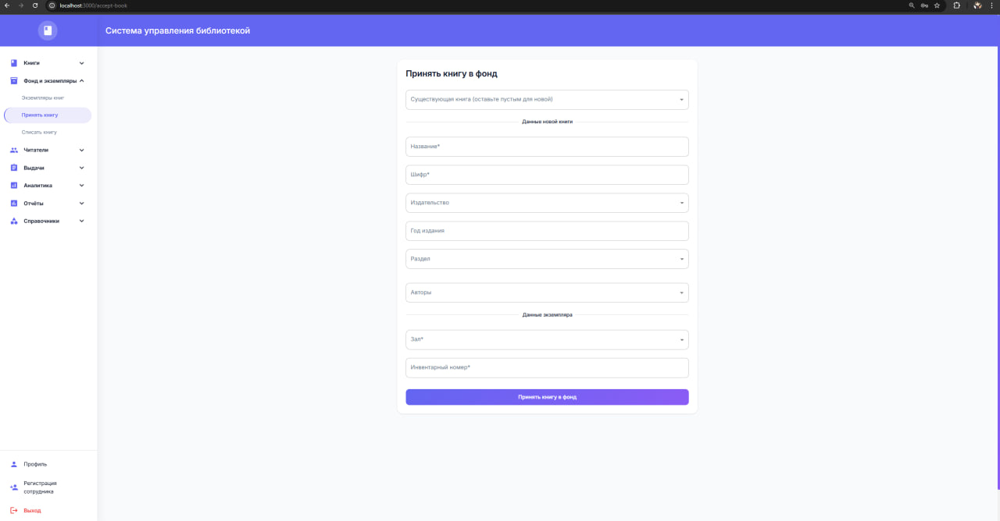

Система управления библиотекой - Frontend
Фронтенд для системы управления библиотекой, построенный на React + TypeScript + Material-UI.
Структура проекта
- src/api: API-клиенты для работы с бэкендом (книги, читатели, выдачи и т.д.).
- src/auth: логика аутентификации (
AuthContext,RequireAuthи вспомогательный код). - src/components: переиспользуемые UI-компоненты (уведомления, диалоги, лоадеры, error boundary и др.).
- src/layouts: макеты страниц, основной из них —
AppLayoutс боковым меню и верхней панелью. - src/pages: страницы приложения (
*Page.tsx), каждая отвечает за отдельный раздел системы. - src/routes: конфигурация маршрутов для React Router.
- src/theme: настройка темы MUI (цвета, типографика, общие стили).
- src/types: общие TypeScript-типы для сущностей и API.
- src/utils: вспомогательные функции (форматирование, обработка ошибок и т.п.).
Доступные страницы
Справочники
- Авторы
- Издательства
- Разделы книг
- Залы
Управление книгами
- Каталог книг
- Экземпляры книг
- Принятие книг в фонд
- Списание книг
- Остатки по залам
Управление читателями
- Список читателей
- Регистрация читателей
- Деактивация читателей
Выдачи книг
- Список выдач
- Выдача книг
- Возврат книг
Аналитика
- Просроченные выдачи
- Редкие книги
- Статистика по возрасту
- Статистика по образованию
Отчеты
- Ежемесячный отчёт
Основные зависимости
@mui/material- компоненты UI@mui/x-data-grid- таблицы данныхreact-router-dom- маршрутизацияaxios- HTTP запросыreact-hook-form- формыyup- валидация
Аутентификация
Используется JWT аутентификация: - Access токен (время жизни: 15 минут) - Refresh токен (время жизни: 7 дней) - Автоматическое обновление токенов
Архитектура и основные модули
- Технологии: React 18, TypeScript, React Router v6, MUI, React Hook Form + Yup, Vite.
- Назначение: административная панель для управления библиотекой (книги, экземпляры, читатели, выдачи, отчёты).
- Основные директории:
src/layouts— общий макет (AppLayout) с боковым меню, верхней панелью и областями для контента (Outlet).src/auth— аутентификация:AuthContext(контекст авторизации) иRequireAuth(обёртка для защищённых маршрутов).src/pages— отдельный компонент страницы на каждую функцию системы (каталог книг, читатели, выдачи и т.д.).src/api— HTTP-клиенты для сущностей (books.api.ts,readers.api.ts,issues.api.tsи др.), базовый клиент вhttp.ts.src/hooks— кастомные хуки:useNotification(уведомления),useDeleteConfirm(подтверждение удаления).src/components— переиспользуемые компоненты (ErrorBoundary,Notification,ConfirmDialog,Loadingи др.).
Маршрутизация и защита
- Все рабочие страницы рендерятся внутри
AppLayoutи оборачиваются вRequireAuth. - Неавторизованный пользователь перенаправляется на
/login. - После успешного логина (через
AuthContext) выполняется переход, например, на/books.
Формы и валидация
- Формы построены на React Hook Form (
useForm,Controller) с Yup для схем валидации там, где нужно. - Примеры:
LoginPage(форма входа),BooksPage(создание/редактирование книги),AcceptBookPage(приём книги в фонд).
Работа с API
- Вся логика запросов вынесена в
src/api/*.api.ts, где используются функции изhttp.ts. - Базовый клиент добавляет базовый URL, токен авторизации и обрабатывает стандартные ошибки.
Таблицы и списки
- Для списков (книги, читатели, выдачи) используется
DataGridиз@mui/x-data-grid: - колонки описываются через
GridColDef[], - действия в строках реализованы через
GridActionsCellItem(просмотр, редактирование, удаление, активация и т.п.).
Демонстрация проекта
Страница авторизации пользователя:

Каталог книг:

Добавление новой книги напрямую через каталог:

Принятие новой книги в фонд:
